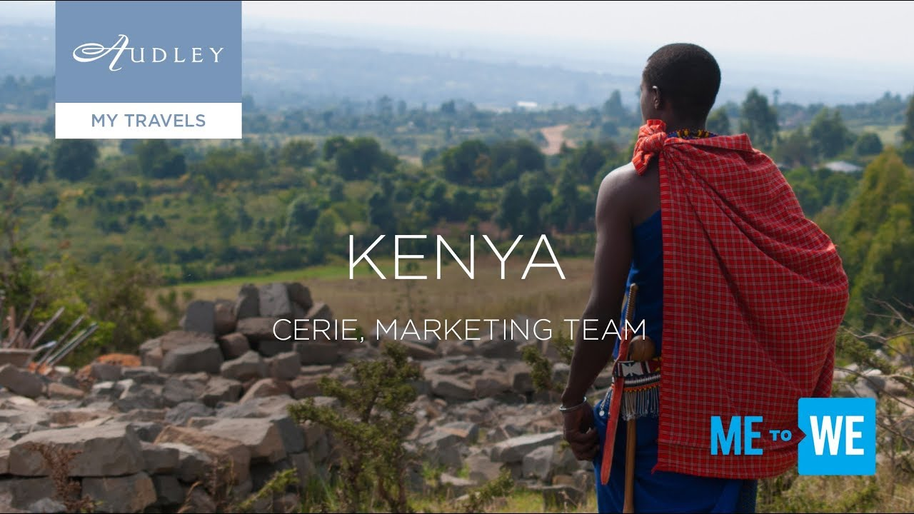
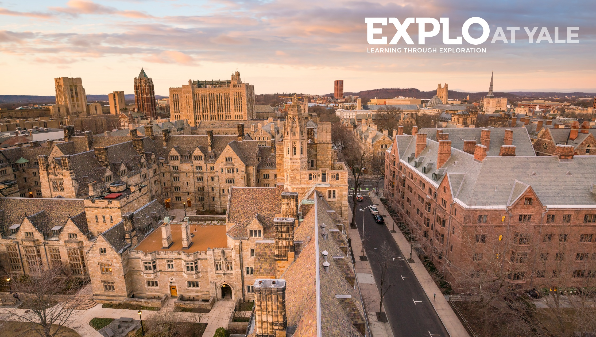

Coummunity Service and Volunteer Activities
- ME TO WE
- Location: Kenya and Hebei,China
- Duration: 20 days
- Purpose of this trip: Make meaningful connections as you volunteer with locals on a sustainablevdevelopment project, bead with mamas, meet community elders and hear stories that have been passed on through generations. Embark on a safari in the Maasai Mara and take in the stunning landscapes and wildlife of the Serengeti. Get ready to journey off the beaten path for an adventure like no other!
- 
- EXPLO
- Location: Yale University
- Duration: 15 days
- Purpose of this trip: A wonderful opportunity to experience what it means to live and learn on the campus of one of the finest universities in the world. But beyond the prestige, the stained-glass windows, and the gargoyles, Yale is rich in culture, history, and hospitality.
- 